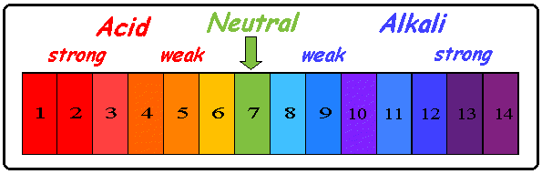

सिद्धांत/बुनियादी सिद्धांत
pH हाइड्रोजन आयन सांद्रता का माप है।
किसी घोल की हाइड्रोजन आयन सांद्रता 10 की घात माइनस pH के बराबर होती है। अर्थात,
[H+] = 10-pH
pH को इस प्रकार भी परिभाषित किया जा सकता है:
"हाइड्रोजन आयन सांद्रता (मोल प्रति लीटर में) के ऋणात्मक लघुगणक (आधार 10) को pH कहा जाता है"
pH = -log[H+]
उदासीन घोल का pH मान 7 होता है। अम्लीय घोल का pH हमेशा 7 से कम होता है, जबकि क्षारीय घोल का pH हमेशा 7 से अधिक होता है।
किसी नमूने के pH को pH पत्र या यूनिवर्सल इंडिकेटर का उपयोग करके मापा जा सकता है।
विभिन्न pH के घोल pH पत्र पर (या यूनिवर्सल इंडिकेटर के साथ) अलग-अलग रंग दिखाते हैं।
